商品的页面详情，使用的静态化模板：
- 了解Thymeleaf的基本使用
- 实现商品详情页的渲染
- 知道页面静态化的作用
- 实现页面静态化功能
1.商品详情
当用户搜索到商品，肯定会点击查看，就会进入商品详情页，接下来我们完成商品详情页的展示，
1.1.Thymeleaf
在商品详情页中，我们会使用到Thymeleaf来渲染页面，所以需要先了解Thymeleaf的语法。
详见课前资料中《Thymeleaf语法入门.md》
1.2.商品详情页服务
商品详情浏览量比较大，并发高，我们会独立开启一个微服务，用来展示商品详情。
1.2.1.创建module
商品的详情页服务，命名为：leyou-goods-web

目录：

1.2.2.pom依赖
<?xml version="1.0" encoding="UTF-8"?>
<project xmlns="http://maven.apache.org/POM/4.0.0"
xmlns:xsi="http://www.w3.org/2001/XMLSchema-instance"
xsi:schemaLocation="http://maven.apache.org/POM/4.0.0 http://maven.apache.org/xsd/maven-4.0.0.xsd">
<parent>
<artifactId>leyou</artifactId>
<groupId>com.leyou.parent</groupId>
<version>1.0.0-SNAPSHOT</version>
</parent>
<modelVersion>4.0.0</modelVersion>
<groupId>com.leyou.goods</groupId>
<artifactId>leyou-goods-web</artifactId>
<version>1.0.0-SNAPSHOT</version>
<dependencies>
<dependency>
<groupId>org.springframework.boot</groupId>
<artifactId>spring-boot-starter-web</artifactId>
</dependency>
<dependency>
<groupId>org.springframework.cloud</groupId>
<artifactId>spring-cloud-starter-netflix-eureka-client</artifactId>
</dependency>
<dependency>
<groupId>org.springframework.cloud</groupId>
<artifactId>spring-cloud-starter-openfeign</artifactId>
</dependency>
<dependency>
<groupId>org.springframework.boot</groupId>
<artifactId>spring-boot-starter-thymeleaf</artifactId>
</dependency>
<dependency>
<groupId>com.leyou.item</groupId>
<artifactId>leyou-item-interface</artifactId>
<version>1.0.0-SNAPSHOT</version>
</dependency>
</dependencies>
</project>
1.2.3.编写启动类
@SpringBootApplication
@EnableDiscoveryClient
@EnableFeignClients
public class LeyouGoodsWebApplication {
public static void main(String[] args) {
SpringApplication.run(LeyouGoodsWebApplication.class, args);
}
}
1.2.4.application.yml文件
server:
port: 8084
spring:
application:
name: goods-web
thymeleaf:
cache: false
eureka:
client:
service-url:
defaultZone: http://127.0.0.1:10086/eureka
instance:
lease-renewal-interval-in-seconds: 5 # 每隔5秒发送一次心跳
lease-expiration-duration-in-seconds: 10 # 10秒不发送就过期
1.2.5.页面模板
我们从leyou-portal中复制item.html模板到当前项目resource目录下的templates中：
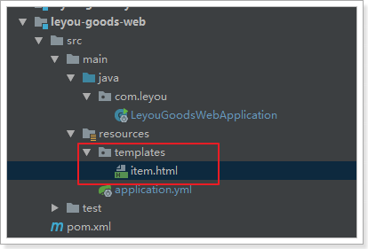
1.3.页面跳转
1.3.1.修改页面跳转路径
首先我们需要修改搜索结果页的商品地址，目前所有商品的地址都是：http://www.leyou.com/item.html
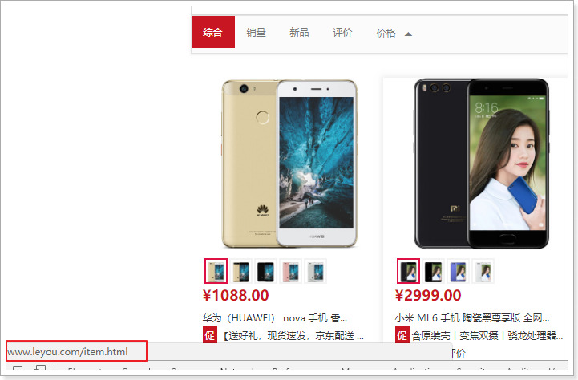
我们应该跳转到对应的商品的详情页才对。
那么问题来了：商品详情页是一个SKU？还是多个SKU的集合？

通过详情页的预览，我们知道它是多个SKU的集合，即SPU。
所以，页面跳转时，我们应该携带SPU的id信息。
例如：http://www.leyou.com/item/2314123.html
这里就采用了路径占位符的方式来传递spu的id，我们打开search.html，修改其中的商品路径：
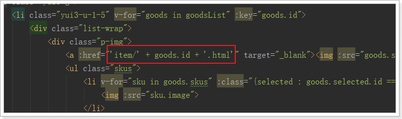
刷新页面后再看：

1.3.2.nginx反向代理
接下来，我们要把这个地址指向我们刚刚创建的服务：leyou-goods-web，其端口为8084
我们在nginx.conf中添加一段逻辑：
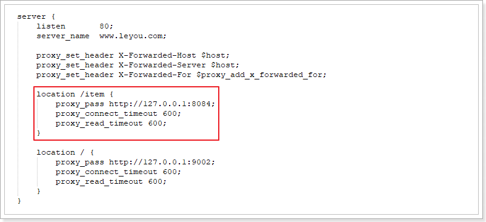
把以/item开头的请求，代理到我们的8084端口。
1.3.3.编写跳转controller
在leyou-goods-web中编写controller，接收请求，并跳转到商品详情页：
@Controller
@RequestMapping("item")
public class GoodsController {
/**
* 跳转到商品详情页
* @param model
* @param id
* @return
*/
@GetMapping("{id}.html")
public String toItemPage(Model model, @PathVariable("id")Long id){
return "item";
}
}
1.3.4.测试
启动leyou-goods-page，点击搜索页面商品，看是能够正常跳转：
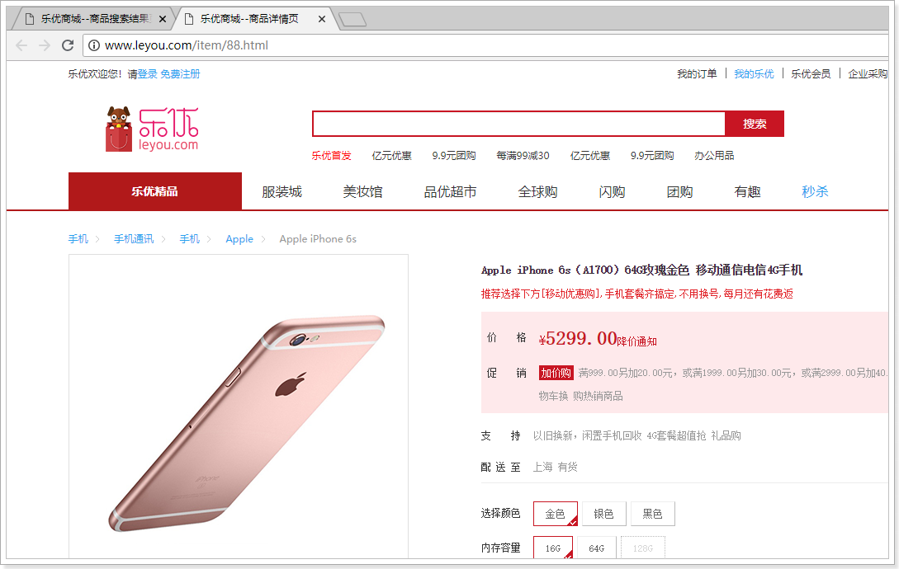
现在看到的依然是静态的数据。我们接下来开始页面的渲染
1.4.封装模型数据
首先我们一起来分析一下，在这个页面中需要哪些数据
我们已知的条件是传递来的spu的id，我们需要根据spu的id查询到下面的数据：
- spu信息
- spu的详情
- spu下的所有sku
- 品牌
- 商品三级分类
- 商品规格参数、规格参数组
1.4.1.商品微服务提供接口
1.4.1.1.查询spu
以上所需数据中，根据id查询spu的接口目前还没有，我们需要在商品微服务中提供这个接口：
GoodsApi
/**
* 根据spu的id查询spu
* @param id
* @return
*/
@GetMapping("spu/{id}")
public Spu querySpuById(@PathVariable("id") Long id);
GoodsController
@GetMapping("spu/{id}")
public ResponseEntity<Spu> querySpuById(@PathVariable("id") Long id){
Spu spu = this.goodsService.querySpuById(id);
if(spu == null){
return new ResponseEntity<>(HttpStatus.NOT_FOUND);
}
return ResponseEntity.ok(spu);
}
GoodsService
public Spu querySpuById(Long id) {
return this.spuMapper.selectByPrimaryKey(id);
}
1.4.1.2.查询规格参数组
我们在页面展示规格时，需要按组展示：
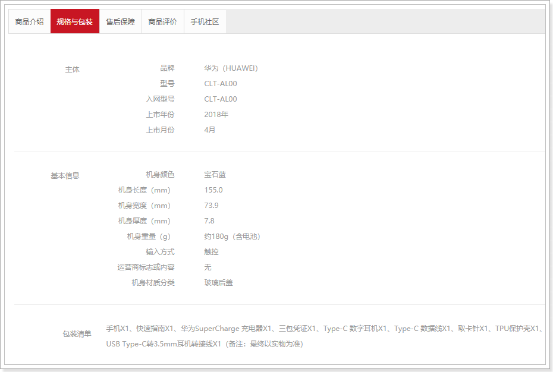
组内有多个参数，为了方便展示。我们在leyou-item-service中提供一个接口，查询规格组，同时在规格组内的所有参数。
拓展
SpecGroup类：
我们在SpecGroup中添加一个SpecParam的集合，保存该组下所有规格参数
@Table(name = "tb_spec_group")
public class SpecGroup {
@Id
@GeneratedValue(strategy = GenerationType.IDENTITY)
private Long id;
private Long cid;
private String name;
@Transient
private List<SpecParam> params; // 该组下的所有规格参数集合
}
然后提供查询接口：
SpecificationAPI：
@RequestMapping("spec")
public interface SpecificationApi {
@GetMapping("groups/{cid}")
public ResponseEntity<List<SpecGroup>> querySpecGroups(@PathVariable("cid") Long cid);
@GetMapping("/params")
public List<SpecParam> querySpecParam(
@RequestParam(value = "gid", required = false) Long gid,
@RequestParam(value = "cid", required = false) Long cid,
@RequestParam(value = "searching", required = false) Boolean searching,
@RequestParam(value = "generic", required = false) Boolean generic);
// 查询规格参数组，及组内参数
@GetMapping("{cid}")
List<SpecGroup> querySpecsByCid(@PathVariable("cid") Long cid);
}
SpecificationController
@GetMapping("{cid}")
public ResponseEntity<List<SpecGroup>> querySpecsByCid(@PathVariable("cid") Long cid){
List<SpecGroup> list = this.specificationService.querySpecsByCid(cid);
if(list == null || list.size() == 0){
return new ResponseEntity<>(HttpStatus.NOT_FOUND);
}
return ResponseEntity.ok(list);
}
SpecificationService
public List<SpecGroup> querySpecsByCid(Long cid) {
// 查询规格组
List<SpecGroup> groups = this.querySpecGroups(cid);
groups.forEach(g -> {
// 查询组内参数
g.setParams(this.querySpecParams(g.getId(), null, null, null));
});
return groups;
}
在service中，我们调用之前编写过的方法，查询规格组，和规格参数，然后封装返回。
1.4.2.创建FeignClient
我们在leyou-goods-web服务中，创建FeignClient：
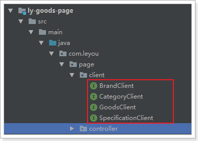
BrandClient：
@FeignClient("item-service")
public interface BrandClient extends BrandApi {
}
CategoryClient
@FeignClient("item-service")
public interface CategoryClient extends CategoryApi {
}
GoodsClient:
@FeignClient("item-service")
public interface GoodsClient extends GoodsApi {
}
SpecificationClient：
@FeignClient(value = "item-service")
public interface SpecificationClient extends SpecificationApi{
}
1.4.3.封装数据模型
我们创建一个GoodsService，在里面来封装数据模型。
这里要查询的数据：
SPU
SpuDetail
SKU集合
商品分类
- 这里值需要分类的id和name就够了，因此我们查询到以后自己需要封装数据
品牌对象
规格组
- 查询规格组的时候，把规格组下所有的参数也一并查出，上面提供的接口中已经实现该功能，我们直接调
sku的特有规格参数
有了规格组，为什么这里还要查询？
因为在SpuDetail中的SpecialSpec中，是以id作为规格参数id作为key，如图：
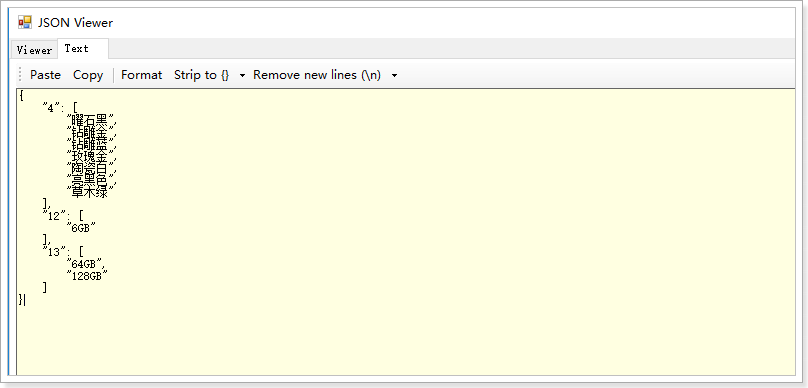
但是，在页面渲染时，需要知道参数的名称，如图：
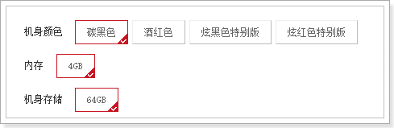
我们就需要把id和name一一对应起来，因此需要额外查询sku的特有规格参数，然后变成一个id:name的键值对格式。也就是一个Map，方便将来根据id查找！
Service代码
@Service
public class GoodsService {
@Autowired
private BrandClient brandClient;
@Autowired
private CategoryClient categoryClient;
@Autowired
private GoodsClient goodsClient;
@Autowired
private SpecificationClient specificationClient;
public Map<String, Object> loadData(Long spuId){
Map<String, Object> map = new HashMap<>();
// 根据id查询spu对象
Spu spu = this.goodsClient.querySpuById(spuId);
// 查询spudetail
SpuDetail spuDetail = this.goodsClient.querySpuDetailBySpuId(spuId);
// 查询sku集合
List<Sku> skus = this.goodsClient.querySkusBySpuId(spuId);
// 查询分类
List<Long> cids = Arrays.asList(spu.getCid1(), spu.getCid2(), spu.getCid3());
List<String> names = this.categoryClient.queryNamesByIds(cids);
List<Map<String, Object>> categories = new ArrayList<>();
for (int i = 0; i < cids.size(); i++) {
Map<String, Object> categoryMap = new HashMap<>();
categoryMap.put("id", cids.get(i));
categoryMap.put("name", names.get(i));
categories.add(categoryMap);
}
// 查询品牌
Brand brand = this.brandClient.queryBrandById(spu.getBrandId());
// 查询规格参数组
List<SpecGroup> groups = this.specificationClient.querySpecGroupByCid(spu.getCid3());
// 查询特殊的规格参数
List<SpecParam> params = this.specificationClient.queryParams(null, spu.getCid3(), null, false);
Map<Long, String> paramMap = new HashMap<>();
params.forEach(param -> {
paramMap.put(param.getId(), param.getName());
});
// 封装spu
map.put("spu", spu);
// 封装spuDetail
map.put("spuDetail", spuDetail);
// 封装sku集合
map.put("skus", skus);
// 分类
map.put("categories", categories);
// 品牌
map.put("brand", brand);
// 规格参数组
map.put("groups", groups);
// 查询特殊规格参数
map.put("paramMap", paramMap);
return map;
}
}
然后在controller中把数据放入model：
@Controller
@RequestMapping("item")
public class GoodsController {
@Autowired
private GoodsService goodsService;
/**
* 跳转到商品详情页
* @param model
* @param id
* @return
*/
@GetMapping("{id}.html")
public String toItemPage(Model model, @PathVariable("id")Long id){
// 加载所需的数据
Map<String, Object> modelMap = this.goodsService.loadModel(id);
// 放入模型
model.addAllAttributes(modelMap);
return "item";
}
}
1.4.4.页面测试数据
我们在页面中先写一段JS，把模型中的数据取出观察，看是否成功：
<script th:inline="javascript">
const a = /*[[${groups}]]*/ [];
const b = /*[[${params}]]*/ [];
const c = /*[[${categories}]]*/ [];
const d = /*[[${spu}]]*/ {};
const e = /*[[${spuDetail}]]*/ {};
const f = /*[[${skus}]]*/ [];
const g = /*[[${brand}]]*/ {};
</script>
然后查看页面源码：
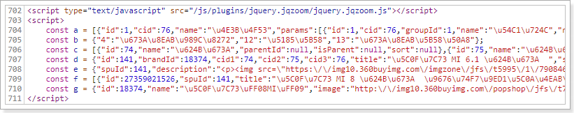
数据都成功查到了！
1.5.渲染面包屑
在商品展示页的顶部，有一个商品分类、品牌、标题的面包屑

其数据有3部分：
- 商品分类
- 商品品牌
- spu标题
我们的模型中都有，所以直接渲染即可（页面101行开始）：
<div class="crumb-wrap">
<ul class="sui-breadcrumb">
<li th:each="category : ${categories}">
<a href="#" th:text="${category.name}">手机</a>
</li>
<li>
<a href="#" th:text="${brand.name}">Apple</a>
</li>
<li class="active" th:text="${spu.title}">Apple iPhone 6s</li>
</ul>
</div>
1.6.渲染商品列表
先看下整体效果：

这个部分需要渲染的数据有5块：
- sku图片
- sku标题
- 副标题
- sku价格
- 特有规格属性列表
其中，sku 的图片、标题、价格，都必须在用户选中一个具体sku后，才能渲染。而特有规格属性列表可以在spuDetail中查询到。而副标题则是在spu中，直接可以在页面渲染
因此，我们先对特有规格属性列表进行渲染。等用户选择一个sku，再通过js对其它sku属性渲染
1.6.1.副标题
副标题是在spu中，所以我们直接通过Thymeleaf渲染：
在第146行左右：
<div class="news"><span th:utext="${spu.subTitle}"></span></div>
副标题中可能会有超链接，因此这里也用th:utext来展示，效果：

1.6.2.渲染规格属性列表
规格属性列表将来会有事件和动态效果。我们需要有js代码参与，不能使用Thymeleaf来渲染了。
因此，这里我们用vue，不过需要先把数据放到js对象中，方便vue使用
初始化数据
我们在页面的head中，定义一个js标签，然后在里面定义变量，保存与sku相关的一些数据：
<script th:inline="javascript">
// sku集合
const skus = /*[[${skus}]]*/ [];
// 规格参数id与name对
const paramMap = /*[[${params}]]*/ {};
// 特有规格参数集合
const specialSpec = JSON.parse(/*[[${spuDetail.specialSpec}]]*/ "");
</script>
specialSpec：这是SpuDetail中唯一与Sku相关的数据
因此我们并没有保存整个spuDetail，而是只保留了这个属性，而且需要手动转为js对象。
paramMap：规格参数的id和name键值对，方便页面根据id获取参数名
skus：sku集合
我们来看下页面获取的数据：

通过Vue渲染
我们把刚才获得的几个变量保存在Vue实例中：

然后在页面中渲染：
<div id="specification" class="summary-wrap clearfix">
<dl v-for="(v,k) in specialSpec" :key="k">
<dt>
<div class="fl title">
<i>{{paramMap[k]}}</i>
</div>
</dt>
<dd v-for="(str,j) in v" :key="j">
<a href="javascript:;" class="selected">
{{str}}<span title="点击取消选择"> </span>
</a>
</dd>
</dl>
</div>
然后刷新页面查看：
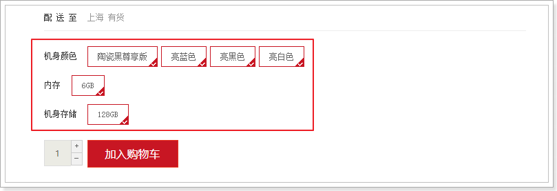
数据成功渲染了。不过我们发现所有的规格都被勾选了。这是因为现在，每一个规格都有样式：selected，我们应该只选中一个，让它的class样式为selected才对！
那么问题来了，我们该如何确定用户选择了哪一个？
1.6.3.规格属性的筛选
分析
规格参数的格式是这样的：

每一个规格项是数组中的一个元素，因此我们只要保存被选择的规格项的索引，就能判断哪个是用户选择的了！
我们需要一个对象来保存用户选择的索引，格式如下：
{
"4":0,
"12":0,
"13":0
}
但问题是，第一次进入页面时，用户并未选择任何参数。因此索引应该有一个默认值，我们将默认值设置为0。
我们在head的script标签中，对索引对象进行初始化：
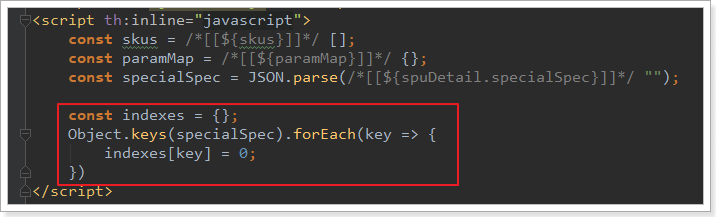
然后在vue中保存：

页面改造
我们在页面中，通过判断indexes的值来判断当前规格是否被选中，并且给规格绑定点击事件，点击规格项后，修改indexes中的对应值：
<div id="specification" class="summary-wrap clearfix">
<dl v-for="(v,k) in specialSpec" :key="k">
<dt>
<div class="fl title">
<i>{{paramMap[k]}}</i>
</div>
</dt>
<dd v-for="(str,j) in v" :key="j">
<a href="javascript:;" :class="{selected: j===indexes[k]}" @click="indexes[k]=j">
{{str}}<span v-if="j===indexes[k]" title="点击取消选择"> </span>
</a>
</dd>
</dl>
</div>
效果：

1.6.4.确定SKU
在我们设计sku数据的时候，就已经添加了一个字段：indexes：

这其实就是规格参数的索引组合。
而我们在页面中，用户点击选择规格后，就会把对应的索引保存起来：

因此，我们可以根据这个indexes来确定用户要选择的sku
我们在vue中定义一个计算属性，来计算与索引匹配的sku：
computed:{
sku(){
const index = Object.values(this.indexes).join("_");
return this.skus.find(s => s.indexes == index);
}
}
在浏览器工具中查看：

1.6.5.渲染sku列表
既然已经拿到了用户选中的sku，接下来，就可以在页面渲染数据了
图片列表
商品图片是一个字符串，以,分割，页面展示比较麻烦，所以我们编写一个计算属性：images()，将图片字符串变成数组：
computed: {
sku(){
const index = Object.values(this.indexes).join("_");
return this.skus.find(s=>s.indexes==index);
},
images(){
return this.sku.images ? this.sku.images.split(",") : [''];
}
},
页面改造：
<div class="zoom">
<!--默认第一个预览-->
<div id="preview" class="spec-preview">
<span class="jqzoom">
<img :jqimg="images[0]" :src="images[0]" width="400px" height="400px"/>
</span>
</div>
<!--下方的缩略图-->
<div class="spec-scroll">
<a class="prev"><</a>
<!--左右按钮-->
<div class="items">
<ul>
<li v-for="(image, i) in images" :key="i">
<img :src="image" :bimg="image" onmousemove="preview(this)" />
</li>
</ul>
</div>
<a class="next">></a>
</div>
</div>
效果：

标题和价格

完整效果

1.7.商品详情
商品详情页面如下图所示：
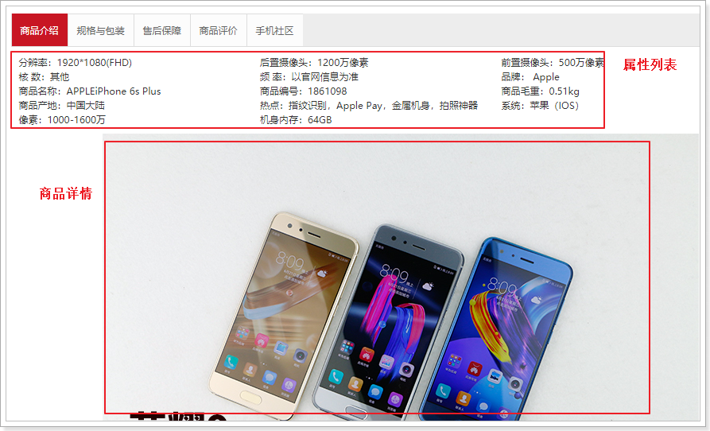
分成上下两部分：
- 上部：展示的是规格属性列表
- 下部：展示的是商品详情
1.7.1.属性列表
1.7.2.商品详情
商品详情是HTML代码，我们不能使用 th:text，应该使用th:utext
在页面的第444行左右：
<!--商品详情-->
<div class="intro-detail" th:utext="${spuDetail.description}">
</div>
最终展示效果：
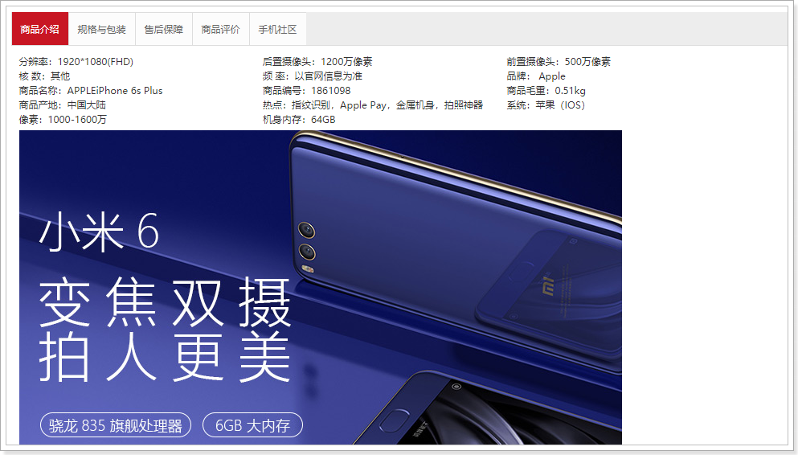
1.8.规格包装
规格包装分成两部分：
- 规格参数
- 包装列表
而且规格参数需要按照组来显示
1.8.1.规格参数
最终的效果：

我们模型中有一个groups，跟这个数据结果很像：

分成8个组，组内都有params，里面是所有的参数。不过，这些参数都没有值！
规格参数的值分为两部分：
- 通用规格参数：保存在SpuDetail中的genericSpec中
- 特有规格参数：保存在sku的ownSpec中
我们需要把这两部分值取出来，放到groups中。
从spuDetail中取出genericSpec并取出groups：
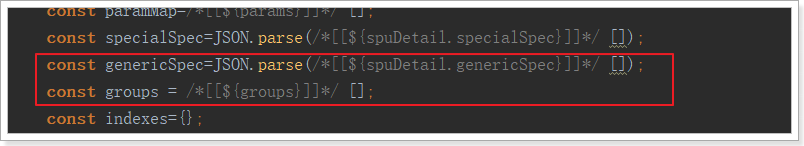
把genericSpec引入到Vue实例：
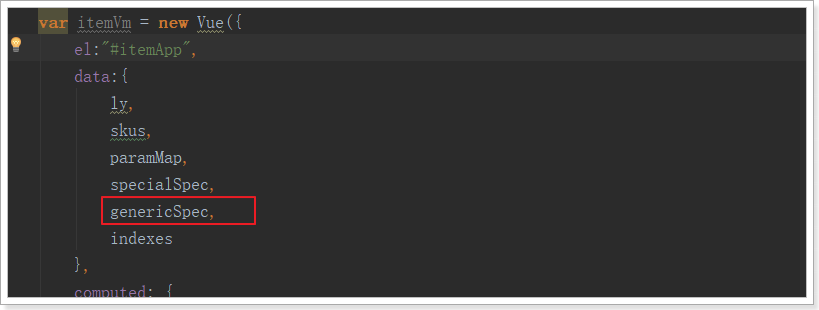
因为sku是动态的，所以我们编写一个计算属性，来进行值的组合：
groups(){
groups.forEach(group => {
group.params.forEach(param => {
if(param.generic){
// 通用属性，去spu的genericSpec中获取
param.v = this.genericSpec[param.id] || '其它';
}else{
// 特有属性值，去SKU中获取
param.v = JSON.parse(this.sku.ownSpec)[param.id]
}
})
})
return groups;
}
然后在页面渲染：
<div class="Ptable">
<div class="Ptable-item" v-for="group in groups" :key="group.name">
<h3>{{group.name}}</h3>
<dl>
<div v-for="p in group.params">
<dt>{{p.name}}</dt><dd>{{p.v + (p.unit || '')}}</dd>
</div>
</dl>
</div>
</div>
1.8.2.包装列表
包装列表在商品详情中，我们一开始并没有赋值到Vue实例中，但是可以通过Thymeleaf来渲染
<div class="package-list">
<h3>包装清单</h3>
<p th:text="${spuDetail.packingList}"></p>
</div>
最终效果：


1.9.售后服务
售后服务也可以通过Thymeleaf进行渲染：
<div id="three" class="tab-pane">
<p>售后保障</p>
<p th:text="${spuDetail.afterService}"></p>
</div>
效果：
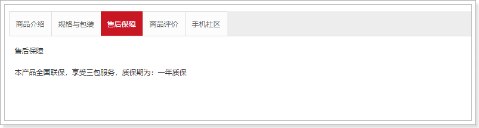
2.页面静态化
2.1.简介
2.1.1.问题分析
现在，我们的页面是通过Thymeleaf模板引擎渲染后返回到客户端。在后台需要大量的数据查询，而后渲染得到HTML页面。会对数据库造成压力，并且请求的响应时间过长，并发能力不高。
大家能想到什么办法来解决这个问题？
首先我们能想到的就是缓存技术，比如之前学习过的Redis。不过Redis适合数据规模比较小的情况。假如数据量比较大，例如我们的商品详情页。每个页面如果10kb，100万商品，就是10GB空间，对内存占用比较大。此时就给缓存系统带来极大压力，如果缓存崩溃，接下来倒霉的就是数据库了。
所以缓存并不是万能的，某些场景需要其它技术来解决，比如静态化。
2.1.2.什么是静态化
静态化是指把动态生成的HTML页面变为静态内容保存，以后用户的请求到来，直接访问静态页面，不再经过服务的渲染。
而静态的HTML页面可以部署在nginx中，从而大大提高并发能力，减小tomcat压力。
2.1.3.如何实现静态化
目前，静态化页面都是通过模板引擎来生成，而后保存到nginx服务器来部署。常用的模板引擎比如：
- Freemarker
- Velocity
- Thymeleaf
我们之前就使用的Thymeleaf，来渲染html返回给用户。Thymeleaf除了可以把渲染结果写入Response，也可以写到本地文件，从而实现静态化。
2.2.Thymeleaf实现静态化
2.2.1.概念
先说下Thymeleaf中的几个概念：
- Context：运行上下文
- TemplateResolver：模板解析器
- TemplateEngine：模板引擎
Context
上下文： 用来保存模型数据，当模板引擎渲染时，可以从Context上下文中获取数据用于渲染。
当与SpringBoot结合使用时，我们放入Model的数据就会被处理到Context，作为模板渲染的数据使用。
TemplateResolver
模板解析器：用来读取模板相关的配置，例如：模板存放的位置信息，模板文件名称，模板文件的类型等等。
当与SpringBoot结合时，TemplateResolver已经由其创建完成，并且各种配置也都有默认值，比如模板存放位置，其默认值就是：templates。比如模板文件类型，其默认值就是html。
TemplateEngine
模板引擎：用来解析模板的引擎，需要使用到上下文、模板解析器。分别从两者中获取模板中需要的数据，模板文件。然后利用内置的语法规则解析，从而输出解析后的文件。来看下模板引擎进行处理的函数：
templateEngine.process("模板名", context, writer);
三个参数：
- 模板名称
- 上下文：里面包含模型数据
- writer：输出目的地的流
在输出时，我们可以指定输出的目的地，如果目的地是Response的流，那就是网络响应。如果目的地是本地文件，那就实现静态化了。
而在SpringBoot中已经自动配置了模板引擎，因此我们不需要关心这个。现在我们做静态化，就是把输出的目的地改成本地文件即可！
2.2.2.具体实现

Service代码：
@Service
public class GoodsHtmlService {
@Autowired
private GoodsService goodsService;
@Autowired
private TemplateEngine templateEngine;
private static final Logger LOGGER = LoggerFactory.getLogger(GoodsHtmlService.class);
/**
* 创建html页面
*
* @param spuId
* @throws Exception
*/
public void createHtml(Long spuId) {
PrintWriter writer = null;
try {
// 获取页面数据
Map<String, Object> spuMap = this.goodsService.loadModel(spuId);
// 创建thymeleaf上下文对象
Context context = new Context();
// 把数据放入上下文对象
context.setVariables(spuMap);
// 创建输出流
File file = new File("C:\\project\\nginx-1.14.0\\html\\item\\" + spuId + ".html");
writer = new PrintWriter(file);
// 执行页面静态化方法
templateEngine.process("item", context, writer);
} catch (Exception e) {
LOGGER.error("页面静态化出错：{}，"+ e, spuId);
} finally {
if (writer != null) {
writer.close();
}
}
}
/**
* 新建线程处理页面静态化
* @param spuId
*/
public void asyncExcute(Long spuId) {
ThreadUtils.execute(()->createHtml(spuId));
/*ThreadUtils.execute(new Runnable() {
@Override
public void run() {
createHtml(spuId);
}
});*/
}
}
线程工具类：
public class ThreadUtils {
private static final ExecutorService es = Executors.newFixedThreadPool(10);
public static void execute(Runnable runnable) {
es.submit(runnable);
}
}
2.2.3.什么时候创建静态文件
我们编写好了创建静态文件的service，那么问题来了：什么时候去调用它呢
想想这样的场景：
假如大部分的商品都有了静态页面。那么用户的请求都会被nginx拦截下来，根本不会到达我们的leyou-goods-web服务。只有那些还没有页面的请求，才可能会到达这里。
因此，如果请求到达了这里，我们除了返回页面视图外，还应该创建一个静态页面，那么下次就不会再来麻烦我们了。
所以，我们在GoodsController中添加逻辑，去生成静态html文件：
@GetMapping("{id}.html")
public String toItemPage(@PathVariable("id")Long id, Model model){
// 加载所需的数据
Map<String, Object> map = this.goodsService.loadModel(id);
// 把数据放入数据模型
model.addAllAttributes(map);
// 页面静态化
this.goodsHtmlService.asyncExcute(id);
return "item";
}
注意：生成html 的代码不能对用户请求产生影响，所以这里我们使用额外的线程进行异步创建。
2.2.4.重启测试
访问一个商品详情，然后查看nginx目录：

2.3.nginx代理静态页面
接下来，我们修改nginx，让它对商品请求进行监听，指向本地静态页面，如果本地没找到，才进行反向代理：
server {
listen 80;
server_name www.leyou.com;
proxy_set_header X-Forwarded-Host $host;
proxy_set_header X-Forwarded-Server $host;
proxy_set_header X-Forwarded-For $proxy_add_x_forwarded_for;
location /item {
# 先找本地
root html;
if (!-f $request_filename) { #请求的文件不存在，就反向代理
proxy_pass http://127.0.0.1:8084;
break;
}
}
location / {
proxy_pass http://127.0.0.1:9002;
proxy_connect_timeout 600;
proxy_read_timeout 600;
}
}
重启测试：
发现请求速度得到了极大提升：